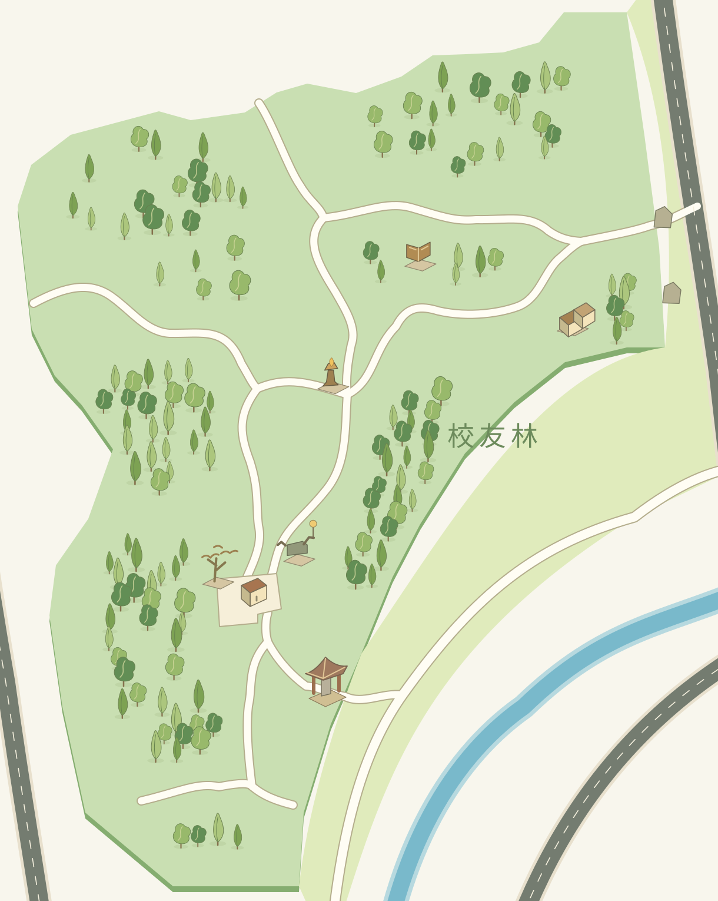

以今日之景，
重走昔日之路。
沿北山的林间小径，读一代人带着书本向西走的故事。

北山 · 西迁文化园
杭州
资料与说明
这张地图以浙江大学紫金港校区北山西迁文化园的纪念景观，连接 1937—1946 年的西迁故事。
地图依据
路网依 2026 年 11 月补充的三张清晰地图重绘；景观点位由此前的现场标注配准转绘。碑亭与求是巢在新图中有明确标识，其余景观仍需实地复核。石刻中的樟树、衡阳、宜山、湄潭依现场标注放在交叉口，其余点位沿园路均匀示意分布，不代表精确实测位置。本图为导览示意，不是测绘成果。
画风参考浙江大学常用生活地图。地图几何参考图含 OpenStreetMap 数据，© OpenStreetMap 贡献者。
图像与历史
今日图像为园区实拍；历史画面为依据文献绘制的原创示意图，不能作为历史影像或史料证据使用。各章保留所依据的来源编号。
查看章节与雕塑对应
西迁时间轴
1937 年离开杭州，1946 年复员归来。